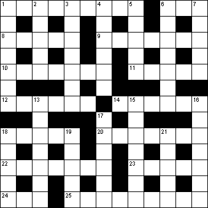

|
|
Daily Quick Crossword
9 July

|
Across 1 Occasionally (9)6 Plant juice (3) 8 Two times (5) 9 Various (anag) (7) 10 Eminent (7) 11 Spanish wine (5) 12 Money chest (6) 14 Perplex (6) 18 Disrobe (5) 20 Observed (7) 22 Milan opera house (2,5) 23 Rub out (5) 24 Colouring substance (3) 25 Souvenirs (9) |
Down 1 Devilish (7)2 Damp (5) 3 Quiver (7) 4 Lots and lots (6) 5 Cut off (5) 6 Behave ostentatiously (4,3) 7 Italian city noted for ham (5) 13 Envisage (7) 15 Deers' horns (7) 16 Incessant (7) 17 Crazy (6) 18 Substantial (5) 19 Mischievous trick (5) 21 Soft white limestone (5) |
|
Copyright © 2020 Simply Daily Puzzles
|